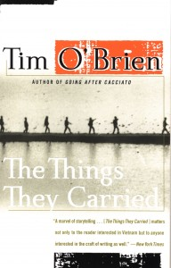
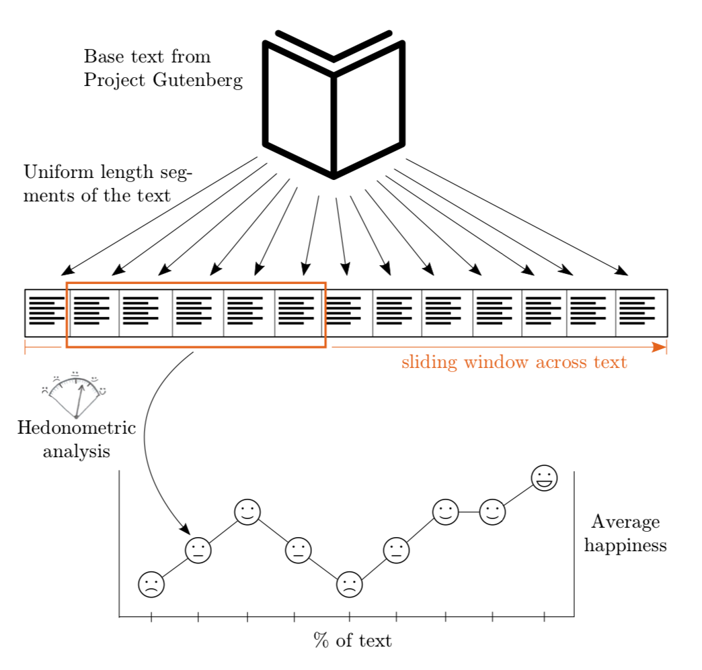

We are currently embroiled in “a crisis of misinformation,” proclaims Brian Chen of The New York Times (Chen 2014). In the modern world, the ability to separate fact from fiction has become increasingly important. The widespread adoption of social media as a primary news source has removed many of the barriers that previously prevented fabricated details from passing as legitimate ones, including publisher vetting of authors and the need to pay to distribute information. Despite the rising importance of differentiating the facts from falsehoods, humans often struggle to make accurate assessments of the veracity of news, especially in the age of social media. While some optimistic technologists have proposed computer fact-checking as a solution to human shortcomings, computers appear to be even worse than humans at separating fiction and nonfiction, suggesting they will be little help in the more complex challenge of identifying fake news.
Part One: The Dilemma

The Things They Carried, Tim O’Brien’s collection of short stories set in wartime Vietnam, exemplifies the ambiguity between fiction and nonfiction for human readers. O’Brien served in the war and used his service as inspiration for the general atmosphere of his stories, but every narrative in The Things They Carried is “fictional” in the traditional sense of the word. All the specific characters and events are products of O’Brien’s imagination. O’Brien has further specified that the incidents and characters are entirely fictional, not even adaptations of his experience as a soldier. In “Field Trip,” O’Brien recounts a trip to Vietnam with his daughter named Kathleen. In response to a reader later wondering if the story was based on a real visit, O’Brien quipped: “I don’t have a daughter named Kathleen. I don’t have a daughter. I don’t have children” (Young 2017).

O’Brien does not make the novel’s veracity straightforward to decipher. He “lovingly dedicates” the book to “the men of Alpha company, and in particular to Jimmy Cross, Norman Bowker, Rat Kiley, Michell Sanders, Henry Dobbins, and Kiowa” (O’Brien 1990). Although all of those men appear in the book, none of them exist outside of its pages. In dedicating The Things They Carried to its fictional cast of characters, O’Brien subverts the conventions of fictional writing, beginning the work of fiction not in the first chapter, but in the dedication itself. Additionally, O’Brien inserts a character with his own name in the narrative, adding to the sense that the book is nonfiction. In fact, if a reader misses the inconspicuous subtitle “a work of fiction,” which appears only in small font on the title page (not on the book’s cover), there is hardly any evidence that he or she is reading a fictional account.
According to Marshall University English Professor and O’Brien scholar John Young, The Things They Carried demonstrates the difference between “happening truth” and “story truth.” While happening truth represents an “accurate and verifiable account of historical events,” story truth is readers’ “genuine experience” of the story, even if the details are only “real” within the pages of the book (Young 2017).
O’Brien embraces his stories’ complicated relationship to the truth. In “How to Tell a True War Story,” he explains that “one thing may happen and be a total lie; another thing may not happen and be truer than the truth” (O’Brien 1990, 80). In fact, O’Brien considers “story truth” perhaps equally truthful to “happening truth.” A passage from “Rainy River,” one of the short stories in The Things They Carried, perhaps sheds light on why O’Brien prioritizes a nuanced approach to truth in his writing about Vietnam: “Certain blood was being shed for uncertain reasons. I saw no unity of purpose, no consensus on matters of philosophy or history or law. The very facts were shrouded in uncertainty: Was it a civil war? A war of national liberation or simple aggression? Who started it, and when, and why?” (O’Brien 1990, 40). For many, the questionable morality of the United States entering the seemingly unwinnable Vietnam War itself represented a subscription to “story truth,” yet this fact did not prevent the war from impacting the “happening truth” in the lives of millions of Americans. By toying with the idea of truth in The Things They Carried, O’Brien is perhaps conveying how critics of the war at home, in addition to soldiers on the ground, struggled to discern the truth themselves.

Although an observant reader will notice from the subtitle that the stories in the book are works of fiction, The Things They Carried still demonstrates how imperfectly we are able to identify the difference between nonfiction and fiction, especially realistic fiction by clever authors like O’Brien. In his week two discussion post, Yizhen commented that “most” of his high school classmates who read excerpts of The Things They Carried (and thus skipping the subtitle) believed that the book was a collection of memoirs, not a fictional narrative. I had the same experience in my high school class, where we read a few of the stories, and I would assume a poll of our class after reading the first chapter of the book earlier in the term may have yielded similar results. In an introduction to a magazine publishing of one of the stories from the book, O’Brien himself mentions that readers had trouble believing the book was fiction, and they seemed obsessed with “knowing what’s real and what isn’t.” Of course, to O’Brien, the answer is simple: “If you believe it, it’s real; if you don’t, it isn’t” (O’Brien 1990). In a way, O’Brien exploits a seemingly universal human flaw, which is a desire to assume stories are true if we want them to be true. With this observation, O’Brien implies we are perhaps more inclined to believe realistic fiction than we are to believe nonfiction because authors of fiction can embellish the story with details that make the story so good that we feel it must be true.
Acknowledging humans’ difficulty in separating fiction from nonfiction, we might expect computers, armed with complex algorithms and scores of data, to perform better at the task. Comparing the performance of computers and humans, however, we see that although computers lack the biases and emotional barriers of humans, they suffer from the same fundamental difficulties when attempting to separate fiction from nonfiction.
In the burgeoning computer science sub discipline of machine learning, programmers generate a model by feeding a computer (or a group of connected computers) labeled “training data.” For many sets of problems, the computer will eventually “learn” underlying differences in various inputs without the need for humans to communicate explicitly these differences to the computer. Computers learn exceptionally well when there are clear differences between each of the inputs. For example, computers can identify a handwritten digit with incredible accuracy and tell the difference between a smiling face and frowning face. In many cases, humans cannot interpret the “features,” or characteristics, the model uses to make decisions. A “feature space,” the set of all features for a particular model, is often high-dimensional and utilizes seemingly arbitrary combinations of variables to classify objects. While a human may think of the digit “9” as the combination of the circle and the tail, computers may identify a “9” based on the fact that a random set of pixels from both the circle and tail or perhaps neither. Computers excel at some classification tasks, but when it comes to separating fiction and nonfiction, computers suffer from the same underlying problem as humans--there are rarely differences between the two that lie in the text alone. Instead, both often require context to distinguish the categories.

Researchers at the University of Vermont set out to classify books from Project Gutenberg, a digital library, using machine learning. The researchers hoped to classify the emotional arcs of stories into a handful of categories. They attempted to sort each story into one of six basic shapes, including “Rags to riches'' (a rise of a character), “Tragedy” (a fall of a character), “Man in a Hole” (fall, then rise), “Cinderella” (rise, fall, then rise), “Oedipus” (fall, rise, then fall), and “Icarus” (rise, then fall). Impressively, the researchers found that about 85 percent of the works matched one of the six shapes (Reagan et al. 2016). Yet, upon closer examination, the paper contains some counterintuitive results. While they intended to uncover insights about fictional writing, the researchers analyzed all works in the Gutenberg library, including both fiction and nonfiction. This dual analysis produced surprising findings. For example, the best fit for the Icarus story arc was not a Shakespeare play or a Dickens novel. In fact, the best fit was not a work of fiction at all. According to the model, a collection of yoga sutras provided the best “rise and fall” tale of all the texts (Reagan et al. 2016, 5). The Cinderella story arc best matched a nonfiction philosophical treatise by Boethius, not the famous fairy tale (Reagan et al. 2016, 5). Although the model was not specifically designed to separate fiction from nonfiction, its choice of nonfiction works as the best fit for a fictional story arc demonstrates that computers are still struggling to discriminate between the two categories. Even worse, because of the high-dimensional feature space, researchers are hard-pressed to understand why the model behaves the way it does, making mistakes more difficult to correct.
Computers might eventually be able to approach human accuracy in labeling obvious texts like The Yoga Sutras of Patanjali by studying the structure of a text at the chapter and sentence levels. For realistic fiction like The Things They Carried, however, computers may never match human ability, which does not represent a high bar itself. While they can perform millions of calculations in seconds, no amount of information processing will enable a computer to differentiate “happening truth” from “story truth” because, in reality, there is no fundamental difference between the two that exists in the text alone. Without context, such as the “work of fiction” subtitle to The Things They Carried, humans and computers alike can only rely on what amounts to guesswork to categorize texts as fiction and nonfiction.
Even though computers still struggle to read and classify texts, recent developments have demonstrated that they surprisingly excel at a different task: writing. The poster child of the digital writing revolution is GPT-3, the flagship product from Bay Area-based artificial intelligence company OpenAI. A machine learning model trained on a dataset of hundreds of billions of words, GPT-3 can perform an array of mind-blowing tasks. For example, users can generate code for websites, such as Google’s search home page, in real-time using only plain English prompts: (click the play button to see it in action)
Here's a sentence describing what Google's home page should look and here's GPT-3 generating the code for it nearly perfectly. pic.twitter.com/m49hoKiEpR
— Sharif Shameem (@sharifshameem) July 15, 2020
In addition to functioning code, GTP-3 can write prose based on only a simple two-term prompt. For an example, an experiment using the name of psychologist and author Scott Kaufman and the topic “creativity,” GPT-3 produced a chunk of text about creativity written in Kaufman’s tone:
I think creative expression is a natural byproduct of growing up in a diverse world. The more diverse the world is, the more you get exposed to different people, to different opportunities, to different places and to different challenges. And the more diverse that is, the more likely you’ll be to be able to put the dots together to form something new. And in many ways, I think if you want to be creative, you have to go for it. If you want to be a writer, you have to write, if you want to be a musician, you have to create music, if you want to be a comedian, you have to create comedy, and the more you create, the more likely it is that you’ll stumble onto some interesting stuff.
On Twitter, Kaufman considered the computer-generated paragraph “crazy accurate” and said the words sounded like “something [he] would say.” While GPT-3 can write nonfiction prose like this imitation of Kaufman, it can also construct coherent fiction. Prompted to compose a love story, GPT-3 produced the following gem:
After my fiancé died, my mother told me to “get out there again.” She wanted me to go to a singles bar. I told her I’d rather go to the dentist.
“Just once,” she said. “Just to see what it’s like.”
One day, early last year, I found myself driving to a singles bar in winter snow. I sat in my car for 15 minutes, then drove away. The next day, I went back and sat in my car for another 15 minutes. I did this for a couple of weeks, until I finally mustered up the nerve to walk in.
The place was mobbed. It was like one of those bad dreams where you show up for a test without having studied. I tried to size up the situation. I was a short, thin, middle-aged woman in a sea of young, good-looking men.

With no information other than the initial task (“write a love story”), GPT-3 developed a character in just a few lines, interspersing jokes, simile, and descriptive language! While not exactly Hemmingway, I would argue GPT-3’s writing is more convincingly human than a significant percentage of comments and posts online.
I even used GPT-3’s predecessor, GPT-2, to generate the title for this paper. Keep in mind that GPT-2 is trained on a data set about 100 times smaller than the one used for GPT-3, but the model still produces incredible results. Suffering from an acute case of writer’s block after finishing my first draft, I asked GPT-2 to provide “a title for a paper about fiction and nonfiction.” In response, GPT-2 suggested I use the appropriate, albeit somewhat bland, “Fiction and the Truth,” explaining that it is “in a way similar (a little bit?) to: Nonfiction and fiction and their relations.” Perhaps I should have asked for a “creative” title, but I cannot complain.
In a way, the power of GPT-3 is strikingly counterintuitive given the results of the University of Vermont research introduced earlier. How can computers write fiction if they do not understand how to recognize it? In truth, computers armed with machine learning are closer to parrots than to humans. They may not understand English, but by observing usage of the language in billions of distinct cases, they are able to replicate its intricacies.
Part Two: The Consequences
While the relatively innocuous examples of The Things They Carried and the Project Gutenberg texts demonstrate the difficulty in distinguishing fictional and nonfictional stories in literature, there are also significant consequences of an inability to separate between “true” and “fake” accounts outside of literature.
In court, we expect jurors to evaluate the veracity of testimony and come to important conclusions about a defendant’s guilt. Without the ability to discriminate between fact and fiction, however, the jury may simply believe the testimony with the most convincing “story truth” rather than make the correct decision. Even more concerning, Mark Howe and Lauren Knott of the City University of London have introduced the concept of “memory illusions” in legal testimony, suggesting that witnesses may unwittingly recall a past event incorrectly (Howe and Knott 2015). In other words, witnesses may simply misremember the details of an incident and therefore provide false testimony without malicious intent. If a witness may not know when he or she is lying, how can we expect jurors to determine the truth? As Howe and Knott conclude, “when memory serves as evidence...in criminal and legal proceedings, there are a number of important limitations to that evidence” (Howe and Knott 2015).
Outside of the courtroom, the most dangerous consequence of a failure to identify truth is the proliferation of fake news. Chen’s Times article just grazes the tip of the iceberg on the danger of fake news. In fact, Chen overestimates humans’ skill. He proposes that readers seek alternate sources if information appears misleading. The issue is that carefully designed fake news may not trigger alarm bells in a consumer’s brain. Like O’Brien’s The Things They Carried, fake news can easily masquerade as real news. David Rand of MIT concluded that “on average, people are inclined to believe false news 20% of the time” (Steinmetz 2018). Especially around controversial issues like coronavirus, where knowledge about the topic changes daily, conspiracy theories and fake news can stump even so-called experts (Bellware 2020). In February, Meghan May, a professor of infectious diseases at the University of New England, accidentally tweeted a fake news story that the Chinese government had scrubbed previous data on its coronavirus case counts from the internet, replacing them with much lower totals. May later owned up to her mistake on Twitter, but she is not alone among academics to fall victim to the fake news plague. A Stanford University study found that only 40% of academic historians did not notice that the site MinimumWage.com had connections to the restaurant industry, suggesting a potential bias against workers (Steinmetz 2018).
Combined with the rise of generative technology like GPT-3, the inability to check the veracity of texts spells disaster for society. The toy examples of GPT-3 creating the Google website, the Kaufman snippet, and the love story are astonishing, but even the creators of GPT-3 recognize its near-infinite dangerous potential in the wrong hands. OpenAI identified spam, fishing, and the production as possible concerns with the technology. The most alarming consequence, however, is the ability to seamlessly generate misinformation. Imagine if in place of Kaufman’s name and the prompt “creativity,” GPT-3 instead received president-elect Joe Biden’s name along with the prompt “scandal.” Now imagine if an army of bots retweeted the fake story, adding unique commentary on every post and producing the illusion that the story was widely accepted.
Many influential decision makers believe that computers can come to the rescue. When Twitter instituted fact-checking protocols on its platform last year, critics complained that Twitter executives should not be the arbiters of truth. Instead, some suggested, an automated fact-checking system should flag potentially misleading posts. Twitter CEO Jack Dorsey agreed, his only improvement being that the technology be open source (having its code publicly available). The romantic conception of an impartial computer fact-checker appears fantastic in theory, but the example of the Vermont story arc classification research reveals that computers cannot yet distinguish a collection of yoga sutras from works of pure fiction. Therefore, it appears computers are far off from reliably sniffing out fake news, texts that are specifically engineered to mimic real news and blend in as well as possible.
Ultimately, we appear no closer than ever from finding a reliable method to separate “happening truth” from “story truth” in a given text. Not only can computers not come to our aid, but, in the wrong hands, they can contribute to the spread of misinformation. While there is no straightforward resolution to the dilemma of reliably identifying false stories, our best course of action is to limit its quantity. We should carefully monitor who has access to technologies like GPT-3 instead of allowing free rein and limit reliance on social media as a primary source of news. ∎
A bibliography can be found in the downloaded article by clicking here.